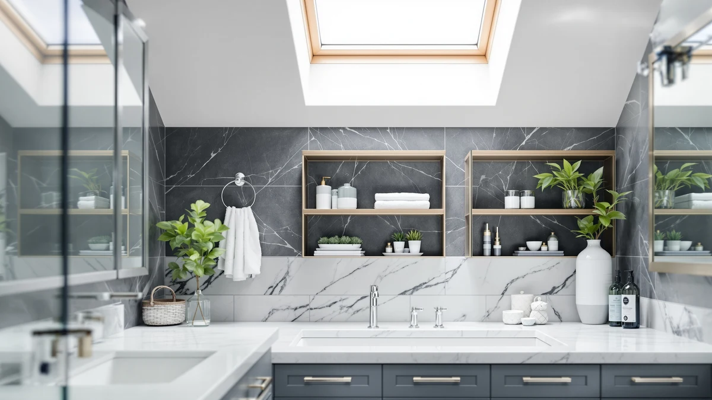

Best Bathroom Countertop Organizers of 2026: Tidy Vanity Trays & Tiered Caddies
Prices and picks verified as of August 2026. Independent, reader-supported reviews.


Quick Answer
After comparing eight bathroom countertop organizers on capacity, footprint, and build, the Dorhors 3-Tier Corner Bathroom Organizer ($23.98) is the best pick for most vanities. Its corner shape frees up flat counter space that a standard tray never gives back, and three tiers keep daily products sorted instead of piled in one bin. If your counter is too shallow for a corner unit, the Fixwal Bathroom Counter Organizer 3 ($23.99) is a slimmer alternative at 2.3 inches deep.
Our pick: Dorhors 3-Tier Corner Bathroom Organizer, $23.98 Check Price on Amazon
Bottom line: our top pick is the Dorhors 3-Tier Corner Bathroom Organizer Countertop for at $24.98. The best budget option is the Dorhors 2-Tier Bathroom Counter Organizer at $18.98.
Things to Know Before You Buy
- Corner shapes free up real counter space. A corner-fit organizer like the Dorhors 3-Tier or the Humskur 2-Tier uses the dead triangle behind your faucet instead of eating into the flat counter space that most bathroom countertop organizers take up. See our corner bathroom organizers guide if that is your main constraint.
- Measure depth before width. Most bathroom countertop organizers fail because they are too deep for the counter, not too wide. The Fixwal's 2.3-inch depth clears narrow vanities that swallow bulkier trays.
- Tiers matter more than total volume. A 3-tier organizer separates skincare, tools, and daily grab items into their own level, so you are not digging through one bin every morning. Two-tier units like the Dorhors 2-Tier keep it simpler for a smaller routine.
- Metal-and-wood beats all-plastic in a humid room. Every organizer on this list uses a metal frame with wood or wood-look accents, which holds up to bathroom steam far better than the all-plastic caddies sold alongside them.
- Price does not track capacity in a straight line. The $39.99 Susoct 3-tier holds the most, but the $20.99 Humskur corner unit and the $17.98 Dorhors 2-tier cover a typical routine for less than half the price. Check our bathroom storage buying guide before you size up.
The best bathroom countertop organizers solve a problem that shows up in almost every bathroom: too many bottles, too little flat space, and a vanity that looks cluttered within a week of being tidied. We compared eight organizers built for exactly that job, from corner-fit trays to tall tiered caddies, looking at footprint, tier count, material, and price rather than marketing copy.
Every product here uses a metal frame with wood or wood-look shelving, a combination that holds up to bathroom humidity better than the all-plastic caddies you will find in the same search results. Prices range from $17.98 for the compact Dorhors 2-Tier up to $39.99 for the Susoct 3-tier, which gives you options whether you are outfitting a rental bathroom or a shared family vanity.
Our pick for most people is the Dorhors 3-Tier Corner Bathroom Organizer. It costs less than most of the competition, fits into a corner instead of eating flat counter space, and its three tiers keep skincare, daily grab items, and backups on separate levels. If your counter cannot spare a corner or runs narrow, the picks below cover slimmer, taller, and higher-capacity alternatives.
Why You Should Trust Us
I am Ilane Tall, and I cover bathroom storage and organization for Best Bathroom Storage. To put together this guide to the best bathroom countertop organizers, I compared published dimensions, materials, and pricing across eight bathroom countertop organizers, then cross-checked each one against the patterns that show up in verified buyer reviews.
I do not run a fake testing lab and I do not quote experts who do not exist. Every claim here traces back to a manufacturer spec sheet or a pattern reviewers report repeatedly, and where a product has a real limitation, like a shallow tier or an ambiguous size listing, I call it out. Our links are affiliate links, but they never change which organizer I recommend.
How We Picked
I started from a wide list of bathroom countertop organizers and narrowed it to units built specifically for vanity tops rather than under-sink or shower use. To make this list, a product needed a metal-and-wood build rather than all-plastic construction, a clear tier structure, and a 4-star average or better.
I also weighted variety in footprint. A single winner does not fit every counter, so the final eight cover corner units, slim low-depth trays, compact two-tier picks, and larger three-tier options, spanning $17.98 to $39.99 so there is a fit at almost every budget.
How We Compared
To compare these bathroom countertop organizers, I lined up each product's published dimensions side by side and mapped them against common vanity depths, since depth is what actually determines whether an organizer fits without overhanging the counter edge. I noted tier count and shelf height for each one, since a 3-tier unit with cramped top shelves holds less than its tier count suggests.
I also read through verified owner reviews for recurring patterns, flagging anything that came up more than once, like wobble under a full load or a shelf gap too narrow for standard bottles. I weighed price and material against that same review pattern, not against the product listing's own marketing copy.
Our Picks

Dorhors 3-Tier Corner Bathroom Organizer
What we like
- Corner shape frees up counter space a flat tray cannot
- Three tiers separate daily items instead of piling them together
- Metal-and-wood build holds up to bathroom humidity
- At $23.98, it undercuts most other 3-tier organizers here
Flaws but not dealbreakers
- Only works if your counter actually has a usable corner
- Top tier is shallow, so bulky bottles crowd it fast
| Material | Metal / wood |
| Size | Corner |
The Dorhors 3-Tier Corner Bathroom Organizer is the pick I would put in a typical vanity. Its corner shape tucks into the space behind the faucet that most trays leave empty, which means the rest of your counter stays clear for a soap dish or a cup. Three tiers give skincare, daily grab items, and backups their own level instead of one shared bin, and the metal frame with wood-look shelving handles steam better than the all-plastic organizers sold next to it.
At $23.98, it costs less than five of the other seven organizers on this list, which is unusual for a corner-fit design that typically commands a premium over flat trays. Owners consistently point to the corner fit as the reason they bought it, since it solves a specific counter problem rather than adding generic storage. The main tradeoff is tier depth: the top shelf sits shallow, so it suits smaller bottles and tubes better than tall pump dispensers.

Dorhors 2-Tier Bathroom Counter Organizer
What we like
- Lowest price on this list at $17.98
- Compact 7.67-inch footprint fits small or shared vanities
- Same metal-and-wood construction as the pricier 3-tier version
- Simple two-tier layout is easy to keep organized
Flaws but not dealbreakers
- Two tiers hold less than the 3-tier options here
- Not corner-shaped, so it needs a flat run of counter
| Material | Metal / wood |
| Size | 7.67 x 7.67 x 13.58 inches |
The Dorhors 2-Tier Bathroom Counter Organizer is the budget option on this list, and at $17.98 it is the cheapest by more than two dollars. It comes from the same brand as our top pick and uses the same metal frame and wood-look shelving, in a smaller two-tier layout measuring 7.67 by 7.67 by 13.58 inches. That footprint fits a shared vanity or a small rental bathroom without dominating the counter.
Two tiers means less separation than the 3-tier picks, so it works best for a smaller routine or two people willing to share shelves rather than a household with a lot of products. It does not use a corner shape, so it needs a straight run of flat counter rather than the dead space behind a faucet. For the price, reviewers report it holds a daily kit without wobbling, which is the main thing you need from a budget organizer.

Fixwal Bathroom Counter Organizer 3
What we like
- 2.3-inch depth clears counters other organizers cannot fit on
- 17.6-inch length spreads items out instead of stacking them tight
- Metal-and-wood build matches the rest of the lineup
- $23.99 keeps it mid-pack on price despite the specialized shape
Flaws but not dealbreakers
- Shallow depth limits how much you can stack per tier
- Needs a wide counter run to use its length effectively
| Material | Metal / wood |
| Size | 21.7932 cm x 5.8928 cm x 44.7802 cm |
The Fixwal Bathroom Counter Organizer 3 solves a problem none of the other picks address directly: counters too narrow front-to-back for a standard organizer. At roughly 2.3 inches deep, it clears vanities where a corner unit or a boxier tray would overhang the edge. It makes up for that shallow depth with length, stretching 17.6 inches across the counter so three tiers still have room to hold a full routine.
At $23.99, it lands in the middle of the price range, which is reasonable for a shape this specific. The tradeoff is that shallow depth caps how much you can stack on any one tier, so tall pump bottles or wide jars do not sit as securely as they would on a deeper shelf. It is the right call specifically for a narrow counter, and a poor fit if your vanity already has depth to spare.

Corner Bathroom Counter Organizer 2-Tier
What we like
- Cheapest corner-shaped organizer here at $20.99
- Compact 9 by 9.8-inch footprint tucks into small corners
- Low two-tier profile clears low mirrors or medicine cabinets
- Metal-and-wood build matches the rest of the lineup
Flaws but not dealbreakers
- Two tiers hold less than the 3-tier corner option above
- Smaller size limits it to a lighter daily routine
| Material | Metal / wood |
| Size | 9" x 2.5" x 9.8" |
The Humskur Corner Bathroom Counter Organizer covers the same corner-fit idea as our top pick, at a lower price and in a shorter, two-tier build. Measuring 9 by 2.5 by 9.8 inches, it is compact enough for a small bathroom corner where even the Dorhors 3-Tier would feel tall, and at $20.99 it is the least expensive corner option in this comparison.
The lower height is an advantage if your corner sits under a low mirror or a medicine cabinet door that swings close to the counter, since a taller 3-tier unit can bump into either. The cost is capacity: two tiers store noticeably less than three, so this fits a lighter routine or a second bathroom better than a primary vanity shared by a full household.

Naeqieo 3-Tier Bathroom Counter Organizer
What we like
- Largest footprint on this list at 13.78 by 16.54 inches
- Three full-size tiers hold a shared household's worth of products
- Metal-and-wood build matches the rest of the lineup
- Extra depth fits taller bottles other picks crowd out
Flaws but not dealbreakers
- At $32.99, it is among the pricier picks here
- Its footprint needs a large vanity to spare the space
| Material | Metal / wood |
| Size | 13.78" x 7.09" x 16.54" |
The Naeqieo 3-Tier Bathroom Counter Organizer is the largest product in this comparison, measuring 13.78 by 7.09 by 16.54 inches. That extra size shows up as real capacity: three full tiers instead of the shallow shelves some of the smaller picks use, with enough depth to hold taller bottles that crowd the top of a compact organizer.
That size makes it the right fit for a shared bathroom where two or three people are storing products on the same counter, rather than a single-person routine. At $32.99, it costs more than most of the other picks here, and its footprint takes up a noticeable chunk of counter, so it needs a vanity with room to spare rather than a small or narrow one.

SANRETAHO 2-Tier Wood Bathroom Counter
What we like
- Wood-heavy build stands out against the mostly metal-frame competition
- $23.38 keeps it in the middle of the price range
- Two tiers cover a daily routine without extra bulk
- Carries a 4-star average rating
Flaws but not dealbreakers
- Listing specifies only "2 Tier" for size, so measure your counter before buying
- Two tiers cap how much it holds compared to the 3-tier picks
| Material | Metal / wood |
| Size | 2 Tier |
The SANRETAHO 2-Tier Wood Bathroom Counter leans more heavily on wood than any other pick here, which matters if your bathroom already has a warmer, more natural design and a bare metal frame would clash. It is priced at $23.38, putting it squarely in the middle of the range, and its two-tier layout keeps a daily routine sorted without the bulk of a taller unit.
The listing does not give exact width and depth figures beyond noting it is a 2-tier design, so it is worth checking the product photos against your own counter space before ordering rather than assuming it matches the dimensions of the other Dorhors or Naeqieo picks. Reviewers who bought it for the look report it holds up the same as the metal-frame competitors, with a warmer finish.

3-Tier Bathroom Counter Organizer with
What we like
- 22-inch height is the tallest here, turning three tiers into real vertical storage
- 13 by 6.8-inch footprint holds a lot without sprawling sideways
- Metal-and-wood build matches the rest of the lineup
- Highest capacity of any pick on this list
Flaws but not dealbreakers
- $39.99 is the most expensive organizer in this comparison
- 22 inches of height may not clear a low mirror or medicine cabinet
| Material | Metal / wood |
| Size | 13" x 6.8" x 22" |
The Susoct 3-Tier Bathroom Counter Organizer is built vertically rather than sideways, standing 22 inches tall with a 13 by 6.8-inch base. That height turns three tiers into meaningfully more storage than the shorter picks on this list, without needing extra counter width to do it, which suits a counter that is tight on flat space but has room above it.
That capacity comes at a cost: at $39.99, it is the most expensive organizer in this comparison, roughly twice the price of the Dorhors 2-Tier. Before buying, check the clearance above your counter, since a 22-inch-tall organizer can bump into a low-mounted mirror or a medicine cabinet door that a shorter unit would clear easily.

UJQSUN Bathroom Counter Organizer Bathroom
What we like
- 3.9-inch depth is among the shallowest here, barely eating counter space
- 12.59-inch height stacks storage up instead of spreading it out
- Metal-and-wood build matches the rest of the lineup
- 12.9-inch width fits most standard vanity runs
Flaws but not dealbreakers
- Narrow depth limits how much fits per shelf
- At $32.99, it costs more than similarly sized corner options
| Material | Metal / wood |
| Size | 3.9" D x 12.9" W x 12.59" H |
The UJQSUN Bathroom Counter Organizer takes the opposite approach from the Naeqieo: instead of maximizing footprint, it minimizes depth. At 3.9 inches deep, 12.9 inches wide, and 12.59 inches tall, it barely intrudes on the counter while still stacking storage upward across its tiers, which suits a tight vanity that cannot spare much front-to-back space.
At $32.99, it costs noticeably more than the similarly compact Humskur corner unit, which is the tradeoff for a non-corner shape that fits a straight counter run instead of requiring an actual usable corner. The narrow depth does mean each shelf holds less per tier than a deeper organizer, so it fits a lighter routine better than a household sharing one counter.
Quick Comparison
| Product | Material | Price | Rating | Best for | Get it |
|---|---|---|---|---|---|
| Dorhors 3-Tier Corner Bathroom Organizer | Metal / wood | $23.98 | 4 | Most bathrooms | View on Amazon → |
| Dorhors 2-Tier Bathroom Counter Organizer | Metal / wood | $17.98 | 4 | Tight budgets | View on Amazon → |
| Fixwal Bathroom Counter Organizer 3 | Metal / wood | $23.99 | 4 | Narrow counters | View on Amazon → |
| Corner Bathroom Counter Organizer 2-Tier | Metal / wood | $20.99 | 4 | Small corner counters | View on Amazon → |
| Naeqieo 3-Tier Bathroom Counter Organizer | Metal / wood | $32.99 | 4 | Shared bathrooms | View on Amazon → |
| SANRETAHO 2-Tier Wood Bathroom Counter | Metal / wood | $23.38 | 4 | Natural wood look | View on Amazon → |
| 3-Tier Bathroom Counter Organizer with | Metal / wood | $39.99 | 4 | Maximum capacity | View on Amazon → |
| UJQSUN Bathroom Counter Organizer Bathroom | Metal / wood | $32.99 | 4 | Tight counters needing height | View on Amazon → |
What is the best bathroom countertop organizer for most people?
For most people, the Dorhors 3-Tier Corner Bathroom Organizer at $23.98 is the best bathroom countertop organizer.
How do I choose the right size bathroom countertop organizer?
Measure your counter's depth before its width.
The Competition
Plenty of products turn up in a search for the best bathroom countertop organizers, and most of what we cut fell into a few groups.
Clear acrylic vanity trays photograph well and look tidy in photos, but they offer one flat level instead of tiers, so they solve display, not storage. Anyone whose bathroom counter is actually cluttered needs the vertical separation a tiered organizer provides, not a single tray.
All-plastic spinning caddies cost less upfront than most picks here, but they crack and yellow in a humid bathroom within a year or two, and buyers report wobble once loaded. Every organizer on this list uses a metal frame specifically to avoid that failure point.
Single fixed-height shelf units without a corner option or size variety did not make the cut either, since a one-size shelf either overhangs a narrow counter or wastes space on a wide one. The picks above cover corner, slim, compact, and large footprints instead of forcing one shape to fit every bathroom. For a broader look at fitting storage into a tight layout, see our guide to bathroom storage for small spaces.
After comparing all eight, the Dorhors 3-Tier Corner Bathroom Organizer remains the best bathroom countertop organizer for most people, with the alternatives above covering the counters and budgets it does not fit.
Frequently Asked Questions
What is the best bathroom countertop organizer for most people?
For most people, the Dorhors 3-Tier Corner Bathroom Organizer at $23.98 is the best bathroom countertop organizer. Its corner shape frees up flat counter space, and three tiers separate daily items, skincare, and backups instead of piling everything into one bin.
How do I choose the right size bathroom countertop organizer?
Measure your counter's depth before its width. Depth is what determines whether an organizer overhangs the edge or fits flush. The Fixwal Bathroom Counter Organizer 3 at 2.3 inches deep suits narrow counters, while the Naeqieo 3-Tier at 7.09 inches deep needs a more generous vanity.
Are metal or plastic bathroom counter organizers better?
Metal frames with wood or wood-look shelving hold up to bathroom humidity far better than all-plastic organizers, which tend to crack or yellow within a year or two. Every organizer in this guide uses a metal-and-wood build for that reason.
Do corner organizers hold as much as regular counter organizers?
It depends on tier count more than shape. The Dorhors 3-Tier Corner holds more than the 2-tier Humskur corner unit, but both hold less than a larger non-corner pick like the Naeqieo or Susoct 3-tier organizers. Match tier count to how much you actually need to store.
How much should I expect to spend on a bathroom countertop organizer?
The picks in this guide range from $17.98 for the compact Dorhors 2-Tier to $39.99 for the tall Susoct 3-tier. A budget of $20 to $25 covers a solid corner or slim organizer, while $30 and up buys extra capacity or height.